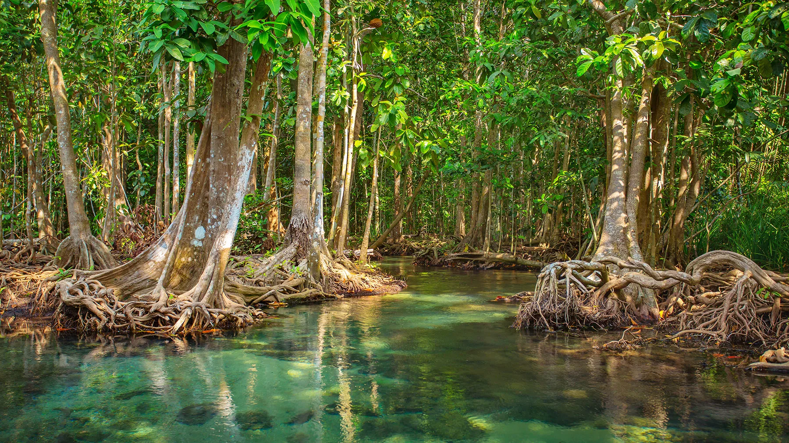
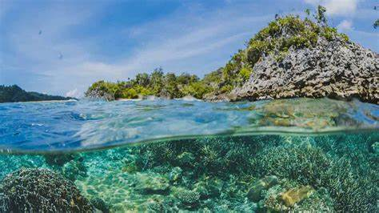
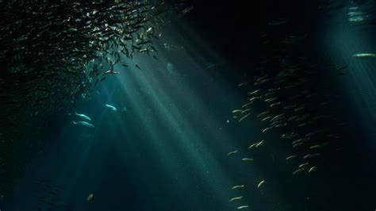
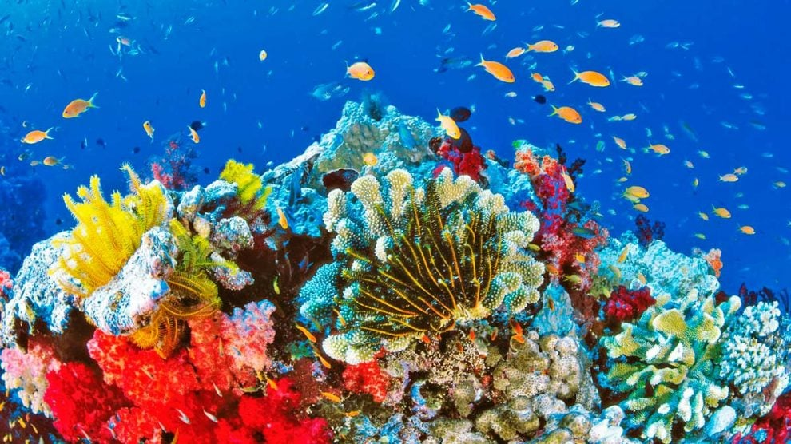

LOS ECOSISTEMAS EN EL OCEANO
La vida en los oceanos cambian mucho dependiendo en la parte de la superficei en la que uno se encuentre. Hasta a la actualidad solo se ha podido explorar un 5% de la vida en el oceano, eso ha pesar de todos los años de avanzes tecnologicos que la humanidad a desarrollado durante mas de 2000 años.
La vida en el oceano se divide en diferentes ecosistemas, los cuales son:
Aguas Costeras
Los ecosistemas costeros se encuentran cerca de la costa y están influenciados por la presencia de la tierra y una mayor exposición a la luz solar que en otros tipos de ecosistemas. Se trata de zonas ubicadas en el litoral marino que son ricas en nutrientes y alberga una gran variedad de especies, desde organismos microscópicos hasta los grandes mamíferos marinos. Los manglares son bosques costeros que se desarollan en zonas intermareales tropicales y subtropicales. Estos ecosistemeas unicos se encuentran en las interfase entre la tierra y el mar, soportando condiciones extremas como la salinmidad elecada, mareas cambiantes y suelos fangosos- Las plantas que se forman en ellas se adaptan de una forma excepcional, lo que les permiten sobrevivir.Los manglares son bosques costeros que se desarollan en zonas intermareales tropicales y subtropicales. Estos ecosistemeas unicos se encuentran en las interfase entre la tierra y el mar, soportando condiciones extremas como la salinmidad elecada, mareas cambiantes y suelos fangosos- Las plantas que se forman en ellas se adaptan de una forma excepcional, lo que les permiten sobrevivir.
- Rhizophora mangle (mangle rojo): Con sus raíces en forma de zancos.
- Avicennia germinans (mangle negro): Con neumatóforos visibles.s
- Laguncularia racemosa (mangle blanco): Con hojas redondeadas y corteza suave.
Ecosistemas de Aguas Abiertas
Estos se encuentran en aguas abiertas,  en las áreas del océano que no se encuentran cerca de la costa y que están expuestos a fuertes corrientes oceánicas, así como a vientos muy fuertes.En este caso, los ecosistemas de aguas abiertas se caracterizan por una gran diversidad de especies, incluyendo pequeños microorganismos, algas, pequeños peces, ballenas, delfines y tiburones.
Ecosistemas de Aguas Profundas
Los ecosistemas de aguas profundas se encuentran en la parte más profunda del océano y están habitados por organismos adaptados a vivir en condiciones extremas de presión y falta de luz. Son áreas del océano situadas a una profundidad de más de 200 metros. Debido a la falta de luz solar y nutrientes, estos ecosistemas se basan en la producción de alimentos a través de la quimiosíntesis, en lugar de la fotosíntesis. Los organismos que habitan en estas profundidades poseen adaptaciones únicas, por lo que podemos encontrar peces con órganos bioluminiscentes y cuerpos transparentes. Por lo tanto, se trata del ecosistema que es más difícil de visitar en un descenso de buceo debido, precisamente, a la profundidad y a los elevados niveles de presión.
Arrefices de Coral
Se trata de uno de los ecosistemas submarinos que son más agradecidos de ver y de visitar en los descensos de buceo. Esto se debe a que, además de que los corales son impresionantes y espectaculares, sirven de hábitat para numerosas especies marinas, entre las que podemos nombrar pequeños peces, moluscos. Son esenciales para la supervivencia de muchas especies marinas y también brindan protección a las costas frenando los efectos de las tormentas fuertes y de los huracanes, en determinadas áreas del planeta. Obviamente, esta división en cuatro zonas es muy esquemática y, por supuesto, existen otras clasificaciones para diferenciar unos tipos de ecosistemas marinos de otros. 